Warehouse & Inventory
Work orders, parts picking, quantity checks and material kitting.
HANDS-ON • RELIABLE • DETAIL-ORIENTED
Experience in assembly, inventory, warehouse operations, production and quality checks — with a practical approach to tools, organization and problem-solving.
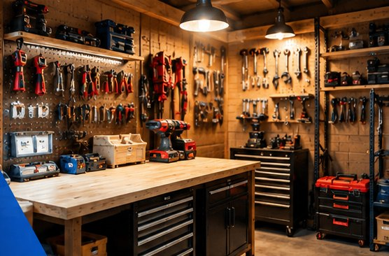
ILLUSTRATIVE IMAGEABOUT ME
I'm a hands-on worker with experience preparing material kits, checking work orders, following assembly drawings, operating production equipment and supporting shipping. I care about accuracy, learning new skills, and keeping work organized.
📍 Seeking opportunities in Escondido, San Marcos, Vista and Carlsbad, CA.
MY SKILLS
Practical experience across the workshop and warehouse.
Work orders, parts picking, quantity checks and material kitting.
Technical drawings, assembly preparation, drilling and tapping.
Parts identification, accurate labeling and organized workflows.
Automatic crimping equipment and semi-automatic labeling.
Double-checking paperwork, computer records and components.
Assistance with packing and preparing completed orders.
FEATURED PERSONAL PROJECT · REAL PHOTOGRAPHS
From an early construction stage to an organized, functional multipurpose space.
Approximately ¾ workshop and tool storage · ¼ laundry area
This ongoing personal project combines shed construction, interior finishing, workshop organization and a compact laundry area. The ten photographs below show the progression from materials and framing to practical storage and a usable multipurpose space.
Skills shown: construction and finishing stages, space planning, labeling, tool storage and organization.
The shed is functional, with some finishing details remaining. These photos document a personal project and do not represent licensed trade work.
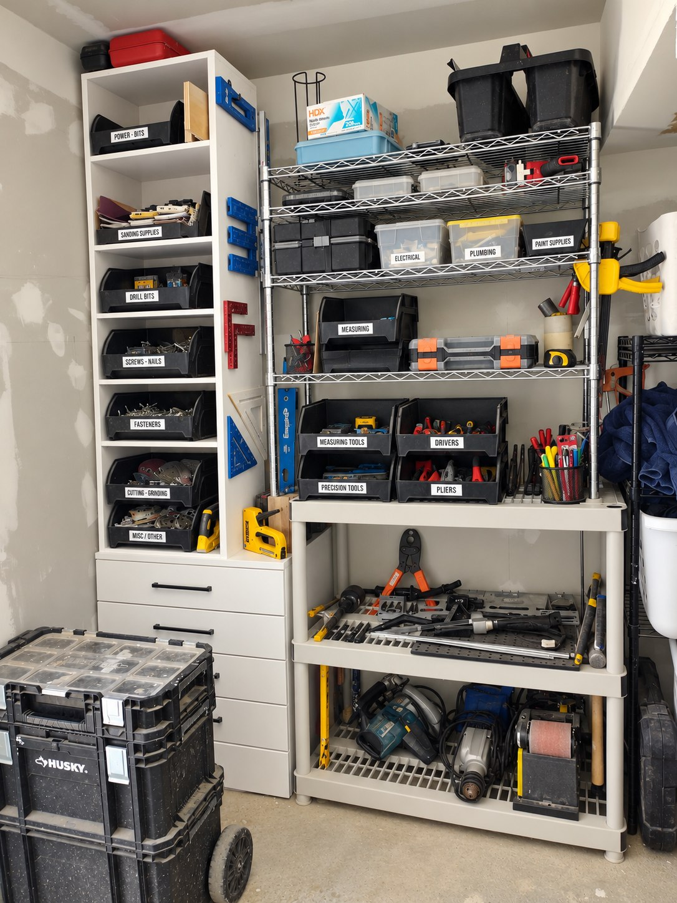
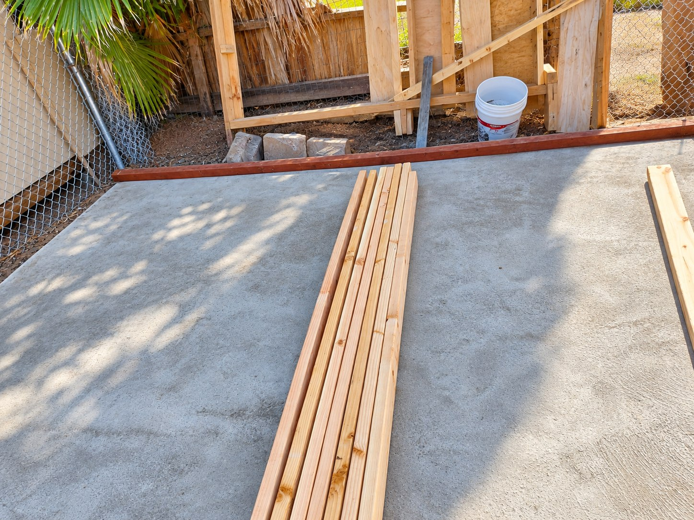
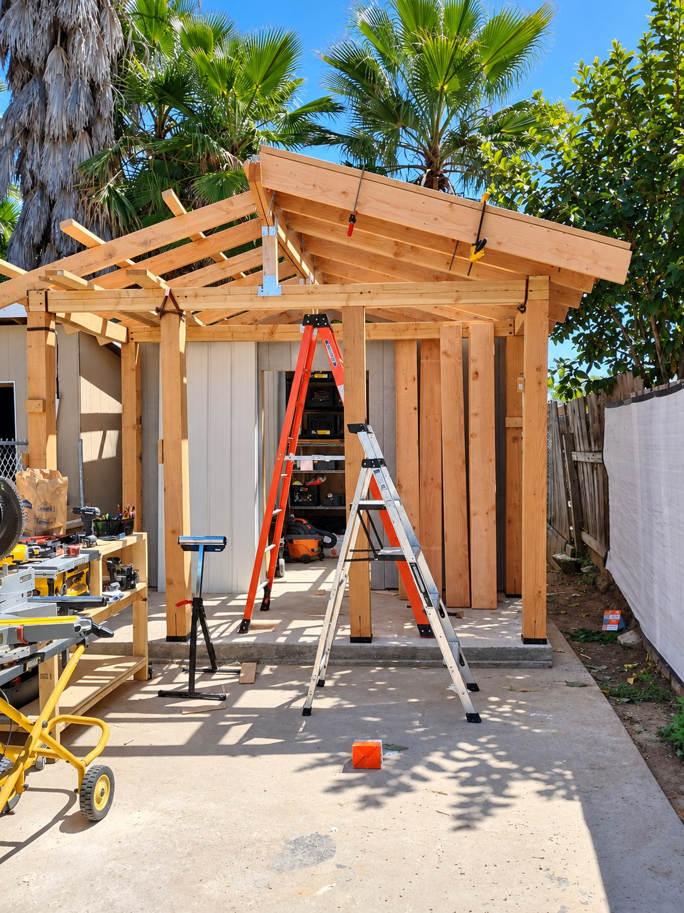
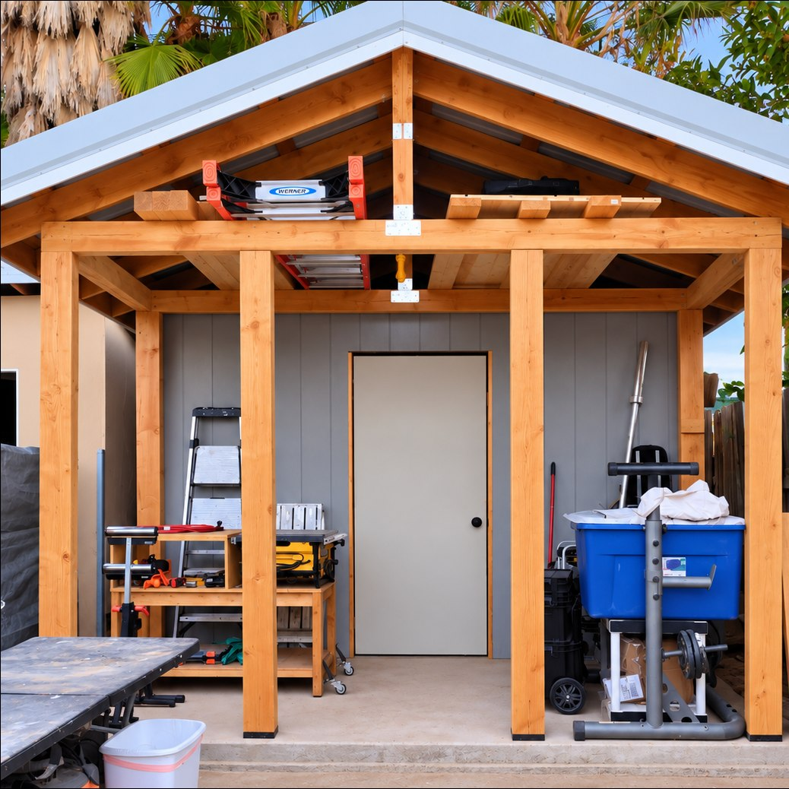
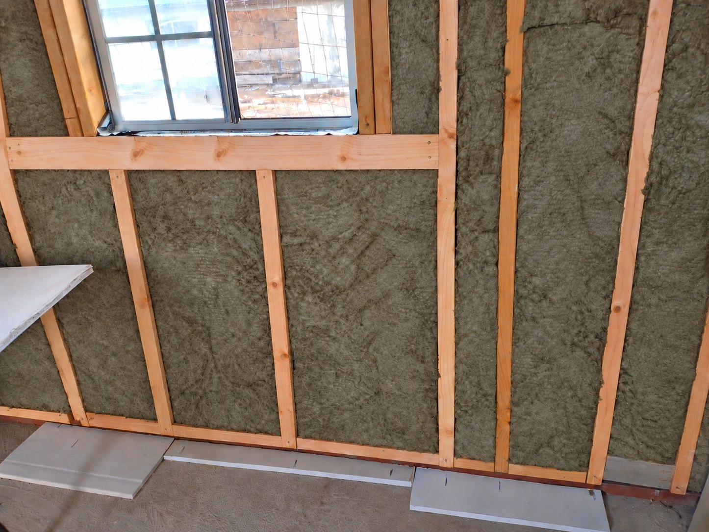
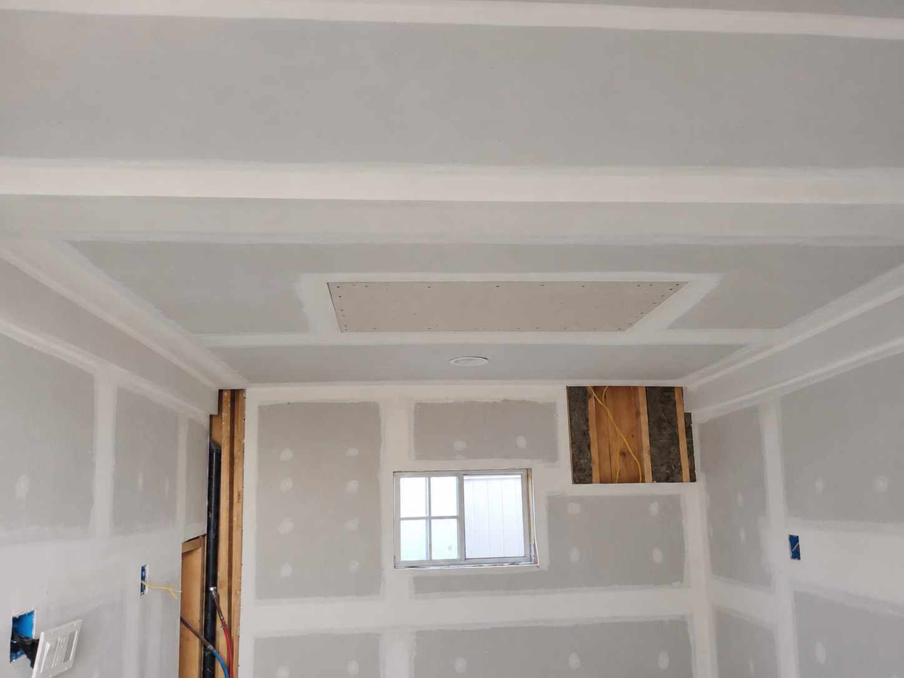
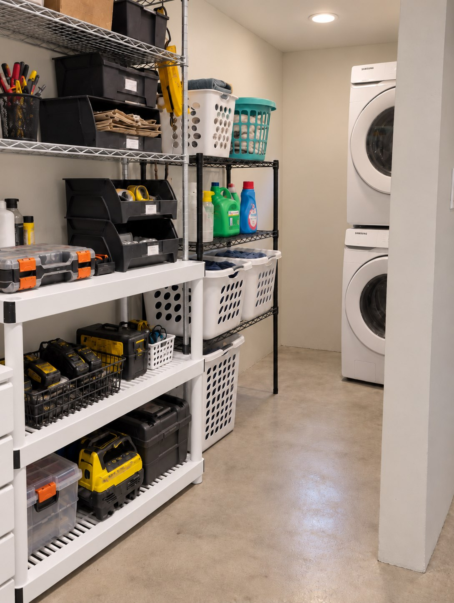
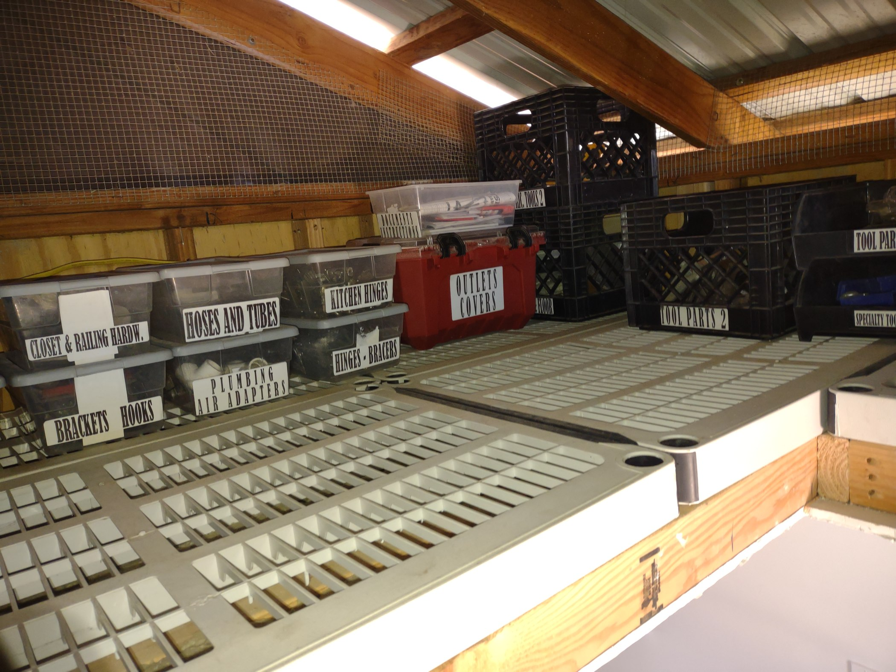
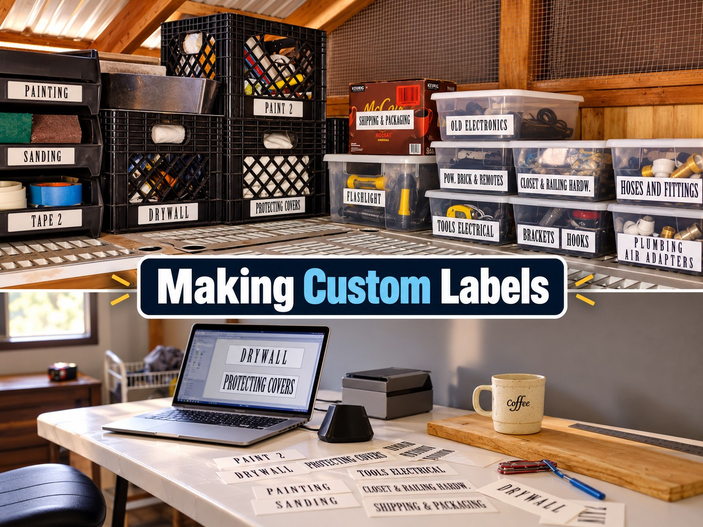
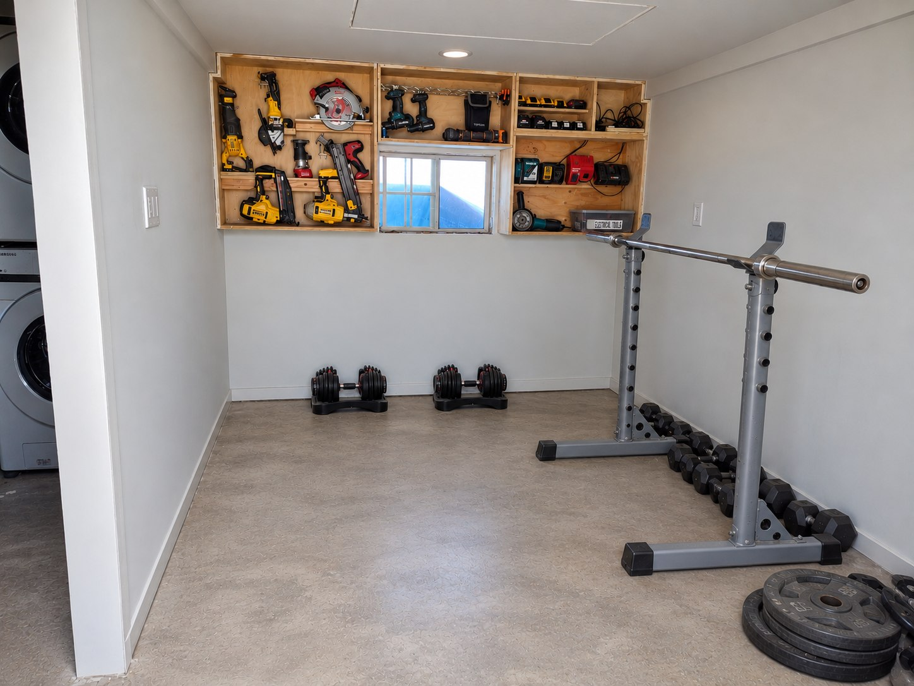
These are photographs of my actual personal project. Select any photo to view it at full size.
PHOTO PORTFOLIO
Additional example categories for future portfolio projects.
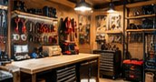
Workshop layout and tool storage
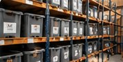
Labeling and inventory systems
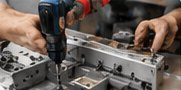
Hands-on component work
Software and problem-solving
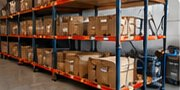
Efficient handling and storage
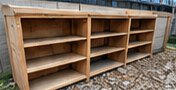
Custom builds and repairs
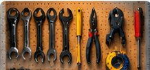
Tool knowledge and familiarity
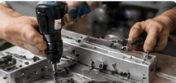
Following instructions and checking work
WORK HISTORY
Manufacturing, material handling and electrical assembly support.
Additional work history and project details will be added as this portfolio grows.
GET IN TOUCH
Open to opportunities in warehouse, assembly, inventory, production and related work.